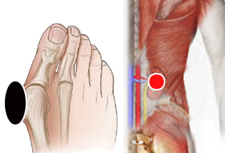

Juanete, Hallus valgus
Pares
juanete - riñón homolateral
metatarso - metatarso

Generalidades:
El Juanete es una prominencia o desviación anormal del dedo grueso del pie (primer segmento metatarsodigital); a veces montándose sobre el segundo dedo. Puede llegar a ser molesto y doloroso.
La causa principal es el uso de calzado inadecuado, ya sea demasiado estrecho en su punta o con tacón excesivo. Se debe considerar la predisposición genética para desarrollar ésta condición. También interviene el exceso de tensión en los músculos del arco del pie, por lo que puede ser de gran ayuda el masaje y ejercicios para activar los pies. El uso de prótesis especial para corregir la alineación del pie es de gran ayuda.